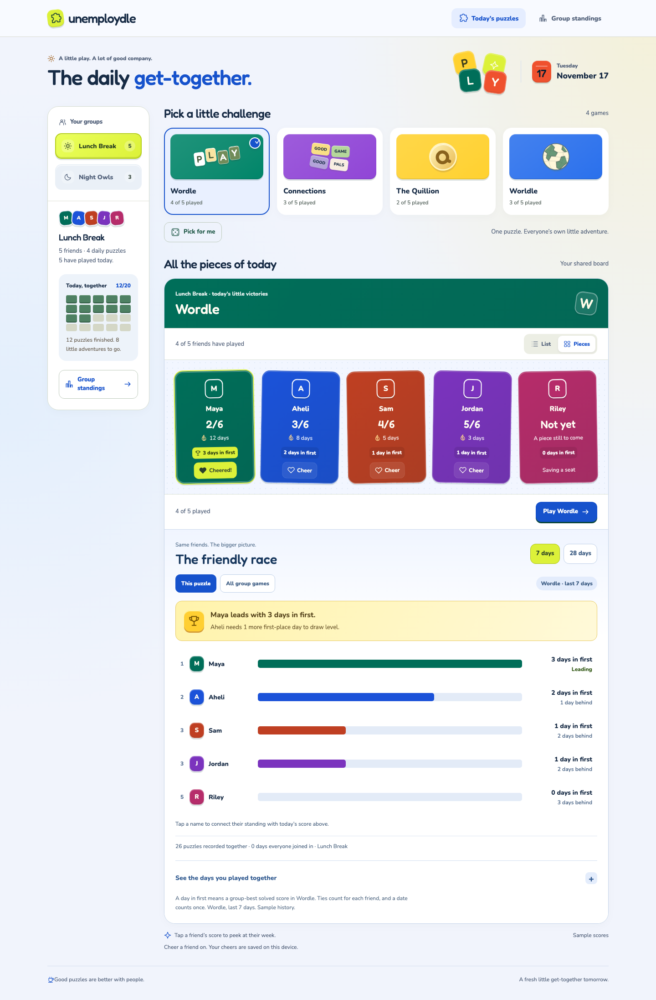
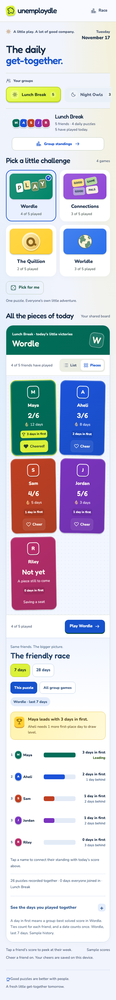

Electric Club: brighter blue, teal, coral, violet, and citrus, with the friendly race connected directly to today’s board. Desktop and mobile previews of the actual implementation. Open the interactive page ↗
Lunch Break · Wordle. Four scores are in; Riley hasn’t played yet.


The walkthrough shows Wordle → Connections → Night Owls → Worldle, a cheer for Leo, and the new puzzle-card board. Tap a score on the live page for a seven-day peek at plays and days in first. Motion is opt-in here; the live page follows your device’s reduced-motion setting. These previews use the existing sample scores.